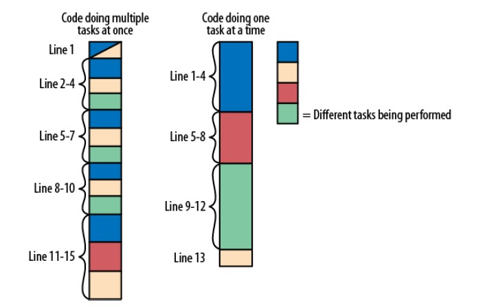
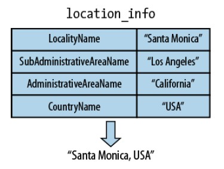
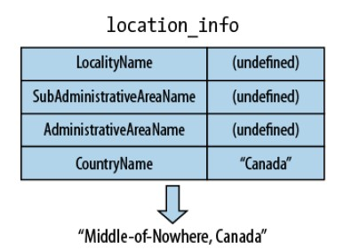

<!doctype html>
<html lang="en">

<head>
    <meta charset="utf-8">
    <title>易讀程式之美學</title>
    <meta name="description" content="A framework for easily creating beautiful presentations using HTML">
    <meta name="author" content="Hakim El Hattab">
    <meta name="apple-mobile-web-app-capable" content="yes" />
    <meta name="apple-mobile-web-app-status-bar-style" content="black-translucent" />
    <meta name="viewport" content="width=device-width, initial-scale=1.0, maximum-scale=1.0, user-scalable=no, minimal-ui">
    <link rel="stylesheet" href="../reveal.js/css/reveal.css">
    <link rel="stylesheet" href="../reveal.js/css/theme/black.css" id="theme">
    <!-- Code syntax highlighting -->
    <link rel="stylesheet" href="../reveal.js/lib/css/zenburn.css">
    <!-- Printing and PDF exports -->
    <script>
    var link = document.createElement('link');
    link.rel = 'stylesheet';
    link.type = 'text/css';
    link.href = window.location.search.match(/print-pdf/gi) ? '../reveal.js/css/print/pdf.css' : '../reveal.js/css/print/paper.css';
    document.getElementsByTagName('head')[0].appendChild(link);
    </script>
    <!--[if lt IE 9]>
		<script src="lib/js/html5shiv.js"></script>
		<![endif]-->
	<style>
	.reveal h2 {
		color: #fdf1c0;
	}
	.reveal h3 {
		color: #f5c5b9;
	}
	.reveal td {
		font-size: 30px;
	}
	</style>

</head>

<body>
    <div class="reveal">
        <!-- Any section element inside of this container is displayed as a slide -->
        <div class="slides">
            <section data-markdown data-separator="^\n\n\n" data-separator-vertical="^\n\n">
                <script type="text/template">
# 第十一章
<br>
## 一次一項工作


## 程式碼重組 (defragmenting)
<br>



## 程式碼重組 (defragmenting)
<br>
* List out all the "tasks" your code is doing.
* Separate those tasks as much as you can into different functions.


## 工作可以很小
```
var vote_changed = function(old_vote, new_vote) {
    var score = get_score();
    if (new_vote !== old_vote) {
        if (new_vote === 'Up') {
            score += (old_vote === 'Down' ? 2 : 1);
        } else if (new_vote === 'Down') {
            score -= (old_vote === 'Up' ? 2 : 1);
        } else if (new_vote === '') {
            score += (old_vote === 'Up' ? -1 : 1);
        }
    }
    set_score(score);
};
```
* <span class="fragment">Parse <span style="color: #9CD2FF">old_vote</span> and <span style="color: #9CD2FF">new_vote</span> into numerical values.</span>
* <span class="fragment">Update score.</span>


## 工作可以很小
```
var vote_value = function(vote) {
    if (vote === 'Up') {
        return +1;
    }
    if (vote === 'Down') {
        return -1;
    }
    return 0;
};
```
```
var vote_changed = function(old_vote, new_vote) {
    var score = get_score();
    score -= vote_value(old_vote); // remove the old vote
    score += vote_value(new_vote); // add the new vote
    set_score(score);
};
```


## 從物件中抽取數值
<br>




## 從物件中抽取數值
```
var place = location_info["LocalityName"]; // e.g. "Santa Monica"
if (!place) {
    place = location_info["SubAdministrativeAreaName"]; // e.g. "Los Angeles"
}
if (!place) {
    place = location_info["AdministrativeAreaName"]; // e.g. "California"
}
if (!place) {
    place = "Middle-of-Nowhere";
}
if (location_info["CountryName"]) {
    place += ", " + location_info["CountryName"]; // e.g. "USA"
} else {
    place += ", Planet Earth";
}
return place;
```
* <div style="font-size: 25px"><span class="fragment">從 <span style="color: #9CD2FF">location_info</span> 字典中取出數值</span></div>
* <div style="font-size: 25px"><span class="fragment">依優先順序取得適當的「城市」值，若無則採用「Middle-of-Nowhere」</span></div>
* <div style="font-size: 25px"><span class="fragment">取得「國家」值，若無則採用「Planet Earth」</span></div>
* <div style="font-size: 25px"><span class="fragment">更新 <span style="color: #9CD2FF">place</span></span></div>


## 從物件中抽取數值
從 <span style="color: #9CD2FF">location_info</span> 字典中取出數值
```
var town = location_info["LocalityName"];               // e.g. "Santa Monica"
var city = location_info["SubAdministrativeAreaName"];  // e.g. "Los Angeles"
var state = location_info["AdministrativeAreaName"];    // e.g. "CA"
var country = location_info["CountryName"];             // e.g. "USA"
```


## 從物件中抽取數值
依優先順序取得適當的「城市」值，<br>若無則採用「Middle-of-Nowhere」
```
var first_half = "Middle-of-Nowhere";
if (state) {
    first_half = state;
}
if (city) {
    first_half = city;
}
if (town) {
    first_half = town;
}
```


## 從物件中抽取數值
取得「國家」值，<br>若無則採用「Planet Earth」
```
var second_half = "Planet Earth";
if (country) {
    second_half = country;
}
```


## 從物件中抽取數值
更新 <span style="color: #9CD2FF">place</span>
```
return first_half + ", " + second_half;
```


## 從物件中抽取數值
另一種做法（國家為美國時的處理方式不同）
```
var first_half, second_half;
if (country === "USA") {
    first_half = town || city || "Middle-of-Nowhere";
    second_half = state || "USA";
} else {
    first_half = town || city || state || "Middle-of-Nowhere";
    second_half = country || "Planet Earth";
}
return first_half + ", " + second_half;
```
<span class="fragment">
<span style="color: #9CD2FF">a || b || c </span>is idiomatic and evaluates to the first
"truthy" value (in this case, a defined, nonempty string).
</span>


## 結語
<span style="color: #F4645F">一次一項工作</span><br>


# 第十二章
<br>
## 將想法轉化為程式碼
<br>
<span class="fragment">
You do not really understand something unless you can explain it to your grandmother.
<br><br>
—Albert Einstein
</span>


## 清楚描述邏輯
```
$is_admin = is_admin_request();
if ($document) {
    if (!$is_admin && ($document['username'] != $_SESSION['username'])) {
        return not_authorized();
    }
} else {
    if (!$is_admin) {
        return not_authorized();
    }
}

// continue rendering the page ...
```
There are two ways you can be authorized: 
* <span class="fragment">You are an admin</span>
* <span class="fragment">You own the current document (if there is one)</span>


## 清楚描述邏輯
```
if (is_admin_request()) {
    // authorized
} elseif ($document && ($document['username'] == $_SESSION['username'])) {
    // authorized
} else {
    return not_authorized();
}

// continue rendering the page ...
```


## 認識函式庫能提供的協助
<br>
Tip: Log in to see your past queries. [Show me another tip!]
```
<div id="tip-1" class="tip">Tip: Log in to see your past queries.</div>
<div id="tip-2" class="tip">Tip: Click on a picture to see it close up.</div>
...
```
```
var show_next_tip = function () {
    var num_tips = $('.tip').size();
    var shown_tip = $('.tip:visible');
    var shown_tip_num = Number(shown_tip.attr('id').slice(4));
    if (shown_tip_num === num_tips) {
        $('#tip-1').show();
    } else {
        $('#tip-' + (shown_tip_num + 1)).show();
    }
    shown_tip.hide();
};
```


## 認識函式庫能提供的協助
```
var show_next_tip = function () {
    var num_tips = $('.tip').size();
    var shown_tip = $('.tip:visible');
    var shown_tip_num = Number(shown_tip.attr('id').slice(4));
    if (shown_tip_num === num_tips) {
        $('#tip-1').show();
    } else {
        $('#tip-' + (shown_tip_num + 1)).show();
    }
    shown_tip.hide();
};
```
* <span class="fragment">找到目前提示並隱藏</span>
* <span class="fragment">找到下一個提示並顯示</span>
* <span class="fragment">若是最後一個提示，則回到第一個顯示</span>


## 認識函式庫能提供的協助
```
var show_next_tip = function() {
    var cur_tip = $('.tip:visible').hide(); // find the currently visible tip and hide it
    var next_tip = cur_tip.next('.tip');    // find the next tip after it
    if (next_tip.size() === 0) {            // if we've run out of tips,
        next_tip = $('.tip:first');         // cycle back to the first tip
    }
    next_tip.show();    // show the new tip
};
```


## 結語
<span style="color: #F4645F">Rubber Ducking</span><br>


# 第十三章
<br>
## 撰寫較少程式碼
<br>
<span class="fragment">
The most readable code is no code at all.
</span>


## 詢問與分解需求
範例：商店搜尋系統
<br><br> 
根據使用者目前所在經緯度，找出經緯度最接近的商店
<br>
* <span class="fragment">When the locations are on either side of the International Date Line</span>
* <span class="fragment">When the locations are near the North or South Pole</span>
* <span class="fragment">Adjusting for the curvature of the Earth, as “longitudinal degrees per mile” changes</span>
<br>
<span class="fragment"><span style="color: #F4645F">Just find (approximately) the closest store computing the Euclidean distance between the latitudes/longitudes</span></span>


## 詢問與分解需求
範例：加入快取
```
read Object A
read Object A
read Object A
read Object B
read Object B
read Object C
read Object D
read Object D
```
* <span class="fragment">Use a cache that discards the least recently used items. (LRU)</span>
<br>
<span class="fragment">
```
DiskObject lastUsed; // class member
DiskObject lookUp(String key) {
    if (lastUsed == null || !lastUsed.key().equals(key)) {
    lastUsed = loadDiskObject(key);
}
return lastUsed;
}
```
</span>


## 維持程式碼小而美
<br>
* <span class="fragment">盡可能建立通用「工具」程式碼，消除重複程式碼</span>
* <span class="fragment">移除未使用的程式碼與功能</span>
* <span class="fragment">將專案畫分為不相連的子專案</span>
* <span class="fragment">一般而言，注意程式的「份量」，維持輕巧</span>


## 熟悉使用函式庫
<br>
Every once in a while, spend 15 minutes reading the names
of all the functions/modules/types in your standard library.


## 熟悉使用函式庫
範例：Python 中的 list 與 set
```
def unique(elements):
    temp = {}
    for element in elements:
        temp[element] = None
    return temp.keys()
    unique_elements = unique([2,1,2])
```
<br>
```
unique_elements = list(set([2,1,2]))
```


## 結語

<br>
<span class="fragment"><span style="color: #F4645F">“Adventure. Excitement. A Jedi craves not these things.” </span></span><br>


Thanks for your attention
<br><br>
Vicki Lin 
<br>
2016/02/01
                </script>
            </section>
        </div>
    </div>
    <script src="../reveal.js/lib/js/head.min.js"></script>
    <script src="../reveal.js/js/reveal.js"></script>
    <script src="../reveal.js/plugin/highlight/highlight.js"></script>
    <script>
    // Full list of configuration options available at:
    // https://github.com/hakimel/reveal.js#configuration
    Reveal.initialize({
        controls: true,
        progress: true,
        history: true,
        center: true,

        transition: 'slide', // none/fade/slide/convex/concave/zoom

        // Optional reveal.js plugins
        dependencies: [{
            src: 'lib/js/classList.js',
            condition: function() {
                return !document.body.classList;
            }
        }, {
            src: '../reveal.js/plugin/markdown/marked.js',
            condition: function() {
                return !!document.querySelector('[data-markdown]');
            }
        }, {
            src: '../reveal.js/plugin/markdown/markdown.js',
            condition: function() {
                return !!document.querySelector('[data-markdown]');
            }
        }, {
            src: '../reveal.js/plugin/highlight/highlight.js',
            async: true,
            condition: function() {
                return !!document.querySelector('pre code');
            },
            callback: function() {
                hljs.initHighlightingOnLoad();
            }
        }, {
            src: '../reveal.js/plugin/zoom-js/zoom.js',
            async: true
        }, {
            src: '../reveal.js/plugin/notes/notes.js',
            async: true
        }]
    });
    </script>
</body>

</html>
